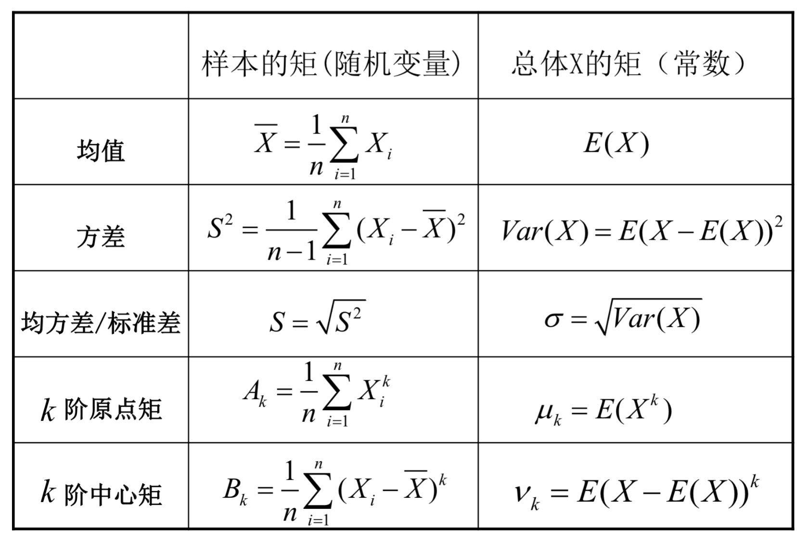
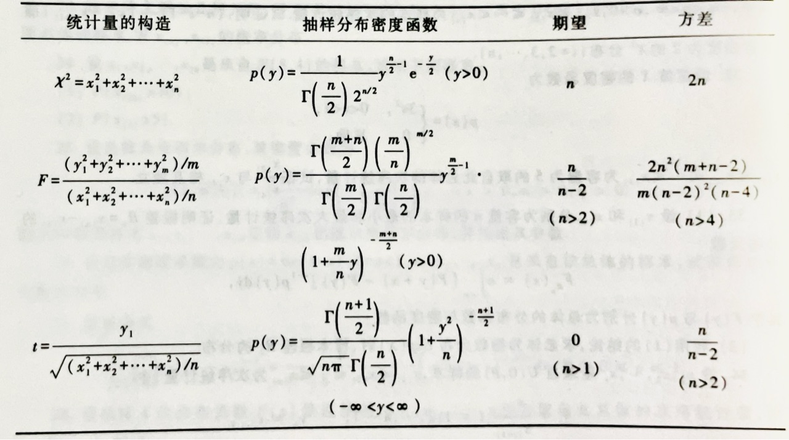
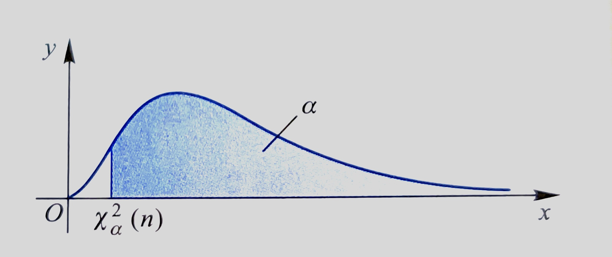
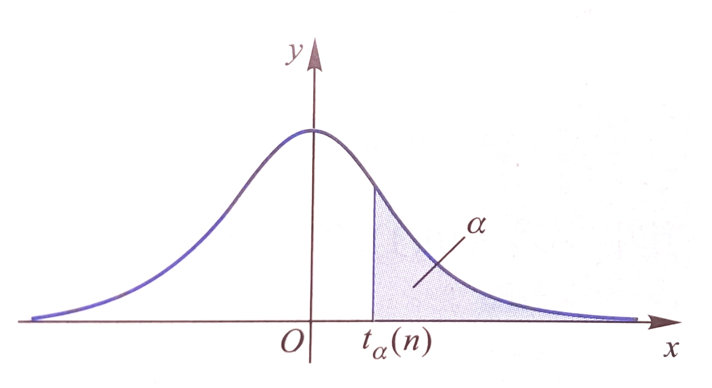
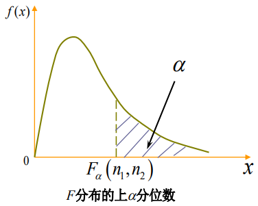

Chapter 6 统计量与抽样分布¶
约 2075 个字 5 张图片 预计阅读时间 10 分钟
从概率论到数理统计
概率论告诉我们，现实中的许多随机事件都会在大数条件下呈现出稳定性（规律性），因而理论上只要对随机现象进行足够多次观察，一定能清楚地计算出各种结果的规律性。但是，实际上所允许的观察永远是有限的，甚至是少量的。
从有限的观察中推测无限观察才能得到的规律，以样本的信息来推断总体的信息，这就是数理统计学研究的问题之一。根据 Glivenko-Cantelli 定理，经验分布函数的收敛行为随着独立同分布的观测值数量的增加而增强，这也证明了数理统计学通过样本信息推断总体信息这一方法的可行性和正确性。
上文提到的从样本出发推断总体，正是所谓的「统计推断」。R.A Fisher 将统计推断分为以下三种：
- 抽样分布（统计量的分布）
- 参数估计
- 假设检验
这也就是我们这三章要学习的内容。
基本概念¶
- 总体与个体：一个统计问题总有它明确的研究对象，研究对象的全体称为总体（母体），总体中的每个成员称为个体
- 总体容量：总体中包含的个体数
- 有限总体是容量有限的总体
- 无限总体是容量无限的总体，通常将容量非常大的总体也按无限总体处理
- 随机样本：为推测总体的分布及其各种特征，按一定规则从总体中抽取若干个体进行观察试验，以获得关于总体的信息，这一过程称为抽样，所抽取的部分个体称为样本，通常记为 \(X=(X_1,X_2,...,X_n)\)
- 样本容量：样本中所包含的个体数目 \(n\)
- 注意，每一个样本 \(X_i\) 都是随机变量，维数与总体一致
- 简单随机样本：满足代表性和独立性的样本称为简单随机样本(Simple Random Sample)，获得简单随机样本的抽样方法称为简单随机抽样
- 代表性：\(X_1,X_2,...,X_n\) 中的每一个与所考察的总体 \(X\) 都有相同的分布
- 独立性：\(X_1,X_2,...,X_n\) 是相互独立的随机变量
后面提到的所有样本，指的都是简单随机样本。
- 若总体有分布函数 \(F(x)\)，则样本具有联合分布函数 \(F_n(x_1,x_2,...,x_n)=\prod_{i=1}^{n}F(x_i)\)
- 若总体为连续型（或离散型）随机变量，其概率密度函数（或分布律）为 \(f(x)\)，则样本具有联合密度函数（或联合分布律） \(f_n(x_1,x_2,...,x_n)=\prod_{i=1}^{n}f(x_i)\)
统计量¶
设 \((X_1,X_2,...,X_n)\) 是来自总体 \(X\) 的一个样本，\(g(X_1,X_2,...,X_n)\) 是 \(X_1,X_2,...,X_n\) 的函数，若 \(g\) 中不含任何未知参数，则称 \(g(X_1,X_2,...,X_n)\) 为一统计量。换言之，统计量是样本的不含任何未知参数的函数。
- 统计量仍然为随机变量
- 统计量的分布（称为抽样分布）一般与总体分布有关，可以依赖未知参数
- 当样本的观察值确定时，统计量的值也就随之确定了
样本均值¶
样本均值反映了总体的期望（均值）。
样本均值的性质
- \(E(\overline{X})=\mu\)，\(Var(\overline{X})=\sigma^2/n\)
- \(\sum\limits_{i=1}^{n}(X_i-\overline{X})=0\)
- 数据观测值与样本均值的偏差平方和最小，即在形如 \(\sum(X_i-c)^2\) 的函数中，\(\sum(X_i-\overline{X})^2\)最小
- 若总体服从 \(N(\mu,\sigma^2)\)，则 \(\overline{X}\) 的精确分布为 \(N(\mu,\sigma^2/n)\)
- 若总体分布未知或不是正态分布，则当 \(n\) 较大时，\(\overline{X}\) 近似服从 \(N(\mu,\sigma^2/n)\)
样本方差¶
样本方差反映了总体的方差，常作为总体方差 \(\sigma^2\) 的无偏估计。
样本方差的性质
- \(E(S^2)=\sigma^2\)
- \(\sum(X_i-\overline{X})^2=\sum X_i^2-\frac{1}{n}(\sum X_i)^2=\sum X_i^2-n\overline{X}^2\)
此外，\(S=\sqrt{S^2}=\sqrt{\frac{1}{n-1}\sum\limits_{i=1}^{n}(X_i-\overline{X})^2}\) 称为样本标准差。
样本 \(k\) 阶矩¶
样本 \(k\) 阶（原点）矩，常作为总体 \(j=k\) 阶原点矩 \(\mu_k\) 的估计：
样本 \(k\) 阶中心距，常作为总体 \(j=k\) 阶中心矩 \(\nu_k\) 的估计，\(B_2\) 可作为总体方差 \(\sigma^2\) 的有偏估计：
样本 \(k\) 阶矩的性质
-
假设 \(X_1,X_2,...,X_n\) 是 \(X\) 中抽取的样本，\(\mu_k=E(X^k)\) 存在，由辛钦大数定律可知：
\[A_k=\frac{1}{n}\sum\limits_{i=1}^{n}X_i^k\xrightarrow{P}\mu_k,\;\;k=1,2,...\]
样本与总体的各阶矩对比表：

三大抽样分布¶
统计量的分布称为抽样分布(Sampling Distribution)。

\(\chi^2\) 分布 / 卡方分布¶
设 \(X_1,X_2,...,X_n\) 为独立同分布，服从 \(N(0,1)\)。则称
服从自由度为 \(n\) 的 \(\chi^2\) 分布，记 \(\chi_{n}^{2}\sim \chi^2(n)\)。
\(\chi^2\) 分布的密度函数（不要求）：
\(\chi^2\) 分布性质
- 设 \(X \sim \chi^2(n)\)，则有 \(E(X)=n\)，\(Var(X)=2n\)
- 设 \(Y_1 \sim \chi^2(m)\)，\(Y_2\sim\chi^2(n)\)，且两者互相独立，则 \(Y_1+Y_2\sim \chi^2(m+n)\)
- 这一性质被称为 \(\chi^2\) 分布的可加性，可以推广到有限个相加的情形
-
\(\chi^2\) 分布的上 \(\alpha\) 分位数：
对于给定的正数 \(\alpha,\;0<\alpha<1\)，称满足条件 \(P\{\chi^2>\chi^2_\alpha(n)\}=\int^{+\infty}_{\chi^2_\alpha(n)}f_{\chi^2}(x)\mathrm{d}x=\alpha\) 的点 \(\chi^2_{\alpha}(n)\) 为 \(\chi^2(n)\) 分布的上 \(\alpha\) 分位数

\(t\) 分布 / 学生氏分布¶
设 \(X\sim N(0,1)\)，\(Y\sim \chi^2(n)\)，且 \(X,Y\) 相互独立，则称随机变量
服从自由度为 \(n\) 的 \(t\) 分布，记做 \(T\sim t(n)\)。
\(t\) 分布的密度函数（不要求）：
其中 \(\Gamma(\alpha)=\int_0^{+\infty}t^{\alpha-1}e^{-t}\mathrm{d}t\)，\(\Gamma(\alpha+1)=\alpha\Gamma(\alpha)=\alpha!(if\;\alpha\in\mathbb{Z})\)，\(\Gamma(0.5)=\sqrt{\pi}\)。
\(t\) 分布性质
- 设 \(T\sim t(n)\)，则当 \(n\geq 2\) 时，有 \(E(T)=0\)；当 \(n\geq 3\) 时，有 \(Var(T)=\frac{n}{n-2}\)
- 当 \(n\) 足够大时，\(t\) 分布近似于标准正态分布 \(N(0,1)\)
- 设 \(T\sim t(n)\)，\(N\sim N(0,1)\)，则对任意的 \(n\geq 1\)，都存在 \(a_0>0\)，使得 \(P(|T|\geq a_0)\geq P(|N|\geq a_0)\)
- \(t_{1-\alpha}(n)=-t_{\alpha}(n)\)

\(F\) 分布¶
设 \(U\sim\chi^2(n_1)\)，\(V\sim \chi^2(n_2)\)，且 \(U,V\) 相互独立，则称随机变量
服从自由度为 \((n_1,n_2)\) 的 \(F\) 分布，记 \(F\sim F(n_1,n_2)\)。
\(F\) 分布的密度函数（不要求）：
\(F\) 分布有如下性质
- 设 \(F\sim F(n_1,n_2)\)，则 \(F^{-1}\sim F(n_2,n_1)\)
- 设 \(X\sim t(n)\)，则 \(X^2\sim F(1,n)\)
- \(F_{1-\alpha}(n_1,n_2)=\frac{1}{F_{\alpha}(n_2,n_1)}\)

三大抽样分布表¶
\(\chi^{2}\) 分布（卡方分布）：
https://www.obhrm.net/index.php/卡方分布表_Chi-Square_Probabilities
\(t\) 分布（学生氏分布），关注 one-sided 部分即可：
\(F\) 分布：
https://blog.csdn.net/sinat_34439107/article/details/78577412
正态总体下的抽样分布¶
设 \(X_1,X_2,...,X_n\) 是来自正态总体 \(N(\mu,\sigma^2)\) 的样本，\(\overline{X}\) 是样本均值，\(S^2\) 是样本方差，则有：
- \(\overline{X}\sim N(\mu,\frac{\sigma^2}{n})\)
- \(\frac{(n-1)S^2}{\sigma^2}\sim \chi^2(n-1)\)
- \(\overline{X}\) 与 \(S^2\) 相互独立
- \(\frac{\overline{X} - \mu}{S/\sqrt{n}}\sim t(n-1)\)
- 这里注意区别一下：\(\frac{\overline{X} - \mu}{\sigma/\sqrt{n}}\sim N(0,1)\)
设 \(X_1,X_2,...,X_n\) 和 \(Y_1,Y_2,...,Y_n\) 是分别来自正态总体 \(N(\mu_1,\sigma_1^2)\) 和 \(N(\mu_2,\sigma_2^2)\)，并且它们相互独立，\(\overline{X},\overline{Y}\) 是样本均值，\(S_1^2,S_2^2\) 是样本方差，则有：
- \(\frac{S_1^2/\sigma_1^2}{S_2^2/\sigma^2_2}\sim F(n_1-1,n_2-1)\)
- \(\frac{(\overline{X}-\overline{Y})-(\mu_{1}-\mu_{2})}{\sqrt{\frac{\sigma_{1}^{2}}{n_1}+\frac{\sigma_{2}^{2}}{n_2}}} \sim N(0,1)\)
- 当 \(\sigma_1^2=\sigma_2^2=\sigma^2\) 时：
\(\frac{(\overline X - \overline Y) - (\mu_1-\mu_2)}{S_\omega\sqrt{\frac{1}{n_1}+\frac{1}{n_2}}}\sim t(n_1+n_2-2)\)，其中 \(S^2_\omega=\frac{(n_1-1)S_1^2+(n_2-1)S^2_2}{n_1+n_2-2}\)